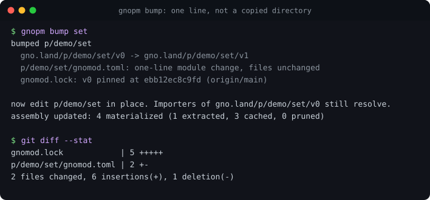
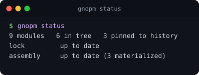
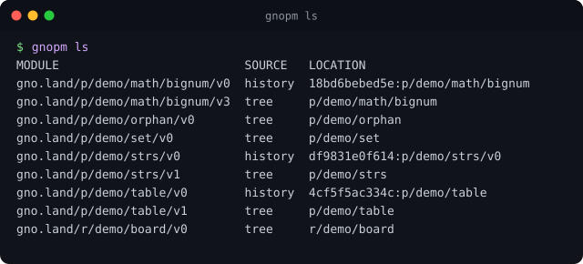
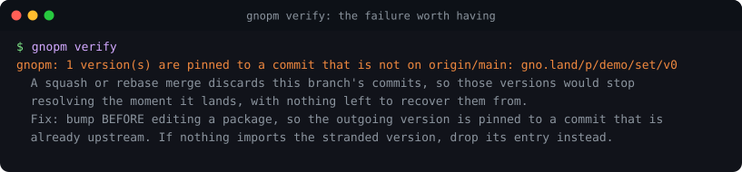
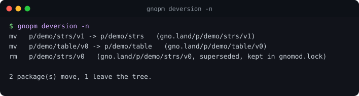

gnopm
A package manager for gno workspaces.


go install moul.io/gnopm@latestThe version belongs in gnomod.toml
A gno package path ends in its version, so the obvious layout gives each version its own directory. Bumping then means copying the directory and editing the copy.
git cannot pair a copy. The review diff of a version bump becomes a set of
added files with no content diff at all, which is backwards: a bump is by definition the
compatibility change that most needs reviewing, and it is the one change you cannot see.
git log --follow, blame and bisect all stop at the copy
too. One real port of 25 realms landed as +11,103 / −0 across 112 files, with
every behaviour change invisible.
gnopm removes the copy. The toolchain already reads the version from the module line, so the directory does not have to repeat it.
p/alice/md/gnomod.toml module = "gno.land/p/alice/md/v1"
p/alice/md/md.gno edited in placeWhat that looks like

gnomod.toml. Then you edit the files, and git
diffs them.
status to ask, sync to fix. Those are the two you
type.

verify catches that while it is still
cheap.
Every image above is generated from real command output by a script in the repository, so none of them can quietly stop matching what the tool prints.
Design, in five claims
Detect, do not ask
If gnopm can work something out, it does. A flag is an admission that it could not.
A build never mutates the lock
Only sync and
bump write.
The lock is source
A change that bumps a version carries the pin that keeps the old one resolvable.
Comments are not data
Making generated prose load-bearing would break every lock over a wording change.
No resolver, ever
A gno import path contains its version, so there is no constraint to solve. gno skipped the class of problem that produces SAT solvers. Keep not solving it.
Not a wallet
It reads chains and generates commands. It never signs and never holds a key.
Try it
gnopm status # what resolves, and whether anything is out of date
gnopm sync # make the state good
gnopm bump md # promote a package, in place; then edit the files
gnopm ls # every module and where its source is
gnopm verify # prove every pinned version still reproduces (for CI)Migrating a repository that still has versioned directories:
gnopm deversion -n # the plan
gnopm deversion # do it, as git renamesUsing it as a library
Everything is in packages so other programs do not have to shell out:
pkg/gnomodlock is the
gnomod.lock format with no dependency on the CLI, and
pkg/gnopm is the
operations. The repository root is the command and a high-level integration test, nothing
else.